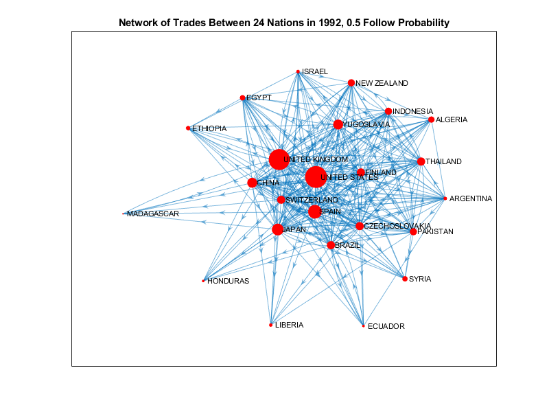
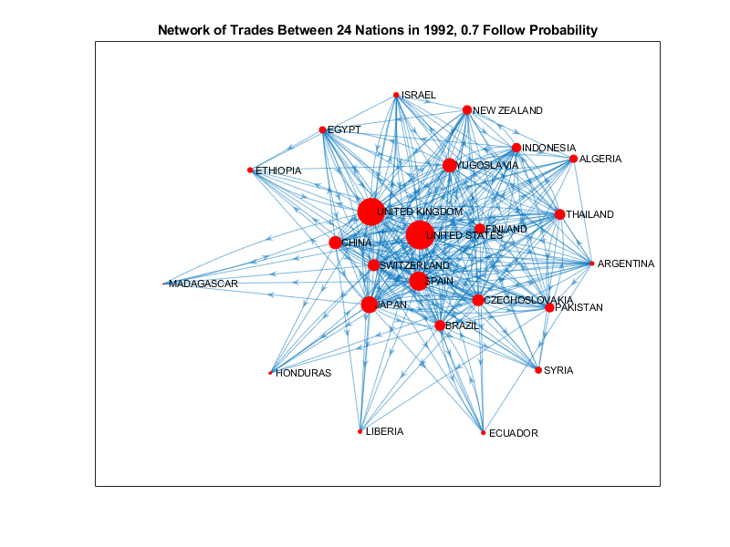

Contents
Initialize
clc; clear; close all;
3a)
Gdata = load('prcentrality.mat');
G = digraph(Gdata.A);
fprintf('PageRank centralities no longer change after 8 iterations\n');
pageRank = centrality(G, 'pagerank', 'MaxIterations', 8);
D = [Gdata.names pageRank];
fprintf('%15s:\t%.4f\n', D');
PageRank centralities no longer change after 8 iterations
ALGERIA: 0.0370
ARGENTINA: 0.0291
BRAZIL: 0.0417
CHINA: 0.0481
CZECHOSLOVAKIA: 0.0441
ECUADOR: 0.0273
EGYPT: 0.0351
ETHIOPIA: 0.0314
FINLAND: 0.0430
HONDURAS: 0.0273
INDONESIA: 0.0397
ISRAEL: 0.0304
JAPAN: 0.0537
LIBERIA: 0.0282
MADAGASCAR: 0.0221
NEW ZEALAND: 0.0395
PAKISTAN: 0.0396
SPAIN: 0.0589
SWITZERLAND: 0.0432
SYRIA: 0.0348
THAILAND: 0.0420
UNITED KINGDOM: 0.0752
UNITED STATES: 0.0797
YUGOSLAVIA: 0.0489
3b)
graphPageRank(G, Gdata.names, pageRank);
title('Network of Trades Between 24 Nations in 1992, 8 PageRank Iterations');
3c)
[B, I] = maxk(pageRank, 3);
fprintf('\n\nCountries with highest PageRank scores: \n')
fprintf('%s\n', Gdata.names(I));
Countries with highest PageRank scores:
UNITED STATES
UNITED KINGDOM
SPAIN
3d)
close all;
pageRankFP1 = centrality(G, 'pagerank', 'FollowProbability', 0.3);
figure;
graphPageRank(G, Gdata.names, pageRankFP1);
title('Network of Trades Between 24 Nations in 1992, 0.3 Follow Probability');
pageRankFP2 = centrality(G, 'pagerank', 'FollowProbability', 0.5);
figure;
graphPageRank(G, Gdata.names, pageRankFP2);
title('Network of Trades Between 24 Nations in 1992, 0.5 Follow Probability');
pageRankFP3 = centrality(G, 'pagerank', 'FollowProbability', 0.7);
figure;
graphPageRank(G, Gdata.names, pageRankFP3);
title('Network of Trades Between 24 Nations in 1992, 0.7 Follow Probability');

 
3e)
pageRankComp = [pageRank pageRankFP1 pageRankFP2 pageRankFP3];
fprintf('%20s\t%20s\t%20s\t%20s\n', 'MaxIterations = 8', 'FollowProbability = 0.3', 'FollowProbability = 0.5', 'FollowProbability = 0.7');
fprintf('%20.5f\t%20.5f\t%20.5f\t%20.5f\n', pageRankComp');
explanation = ["Graphically, there is no drastic change between the " ;
"graph plots for each of the different PageRanks calculated. " ;
"For the Nations with low out-degrees but high in-degrees, the " ;
"PageRank for FollowProbability begins high but rapidly decreases " ;
"i.e. Liberia, Honduras, Ecuador. In contrast, the very highly " ;
"connected components (United States, United Kingdom) have low " ;
"initial PageRanks but rapidly increase. Lastly, as the " ;
"FollowProbability value increases, the pageRank approaches that " ;
"of the pageRank with 8 iterations. The values are the same when " ;
"FollowProbability = 0.85." ];
fprintf('%s\n', explanation);
MaxIterations = 8 FollowProbability = 0.3 FollowProbability = 0.5 FollowProbability = 0.7
0.03702 0.03944 0.03834 0.03751
0.02910 0.03685 0.03388 0.03109
0.04171 0.04244 0.04250 0.04219
0.04808 0.04360 0.04508 0.04673
0.04406 0.04207 0.04260 0.04335
0.02730 0.03612 0.03277 0.02960
0.03512 0.03859 0.03704 0.03583
0.03135 0.03766 0.03522 0.03296
0.04303 0.04186 0.04217 0.04261
0.02734 0.03589 0.03254 0.02948
0.03975 0.04039 0.03993 0.03974
0.03037 0.03714 0.03450 0.03208
0.05371 0.04592 0.04872 0.05154
0.02819 0.03623 0.03306 0.03019
0.02213 0.03409 0.02951 0.02521
0.03955 0.04032 0.03981 0.03957
0.03957 0.04033 0.03982 0.03959
0.05888 0.04855 0.05259 0.05629
0.04317 0.04191 0.04225 0.04273
0.03479 0.03844 0.03682 0.03554
0.04196 0.04139 0.04144 0.04168
0.07517 0.05779 0.06575 0.07176
0.07974 0.05897 0.06797 0.07524
0.04890 0.04400 0.04567 0.04746
Graphically, there is no drastic change between the
graph plots for each of the different PageRanks calculated.
For the Nations with low out-degrees but high in-degrees, the
PageRank for FollowProbability begins high but rapidly decreases
i.e. Liberia, Honduras, Ecuador. In contrast, the very highly
connected components (United States, United Kingdom) have low
initial PageRanks but rapidly increase. Lastly, as the
FollowProbability value increases, the pageRank approaches that
of the pageRank with 8 iterations. The values are the same when
FollowProbability = 0.85.